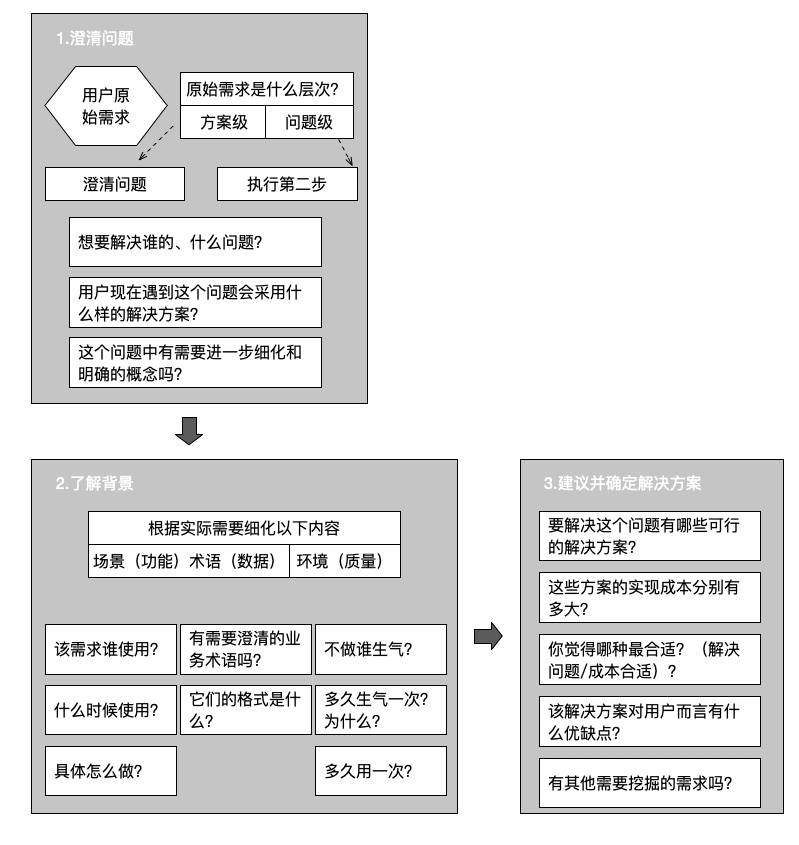

传统的需求分析是站在技术视角展开的，关注的是“方案级需求”；而业务驱动 的需求思想则是站在用户视角展开的，关注的是“问题级需求”
用户提出变更、优化型需求也通常都是直接提出“方案级需求”，因此我们需要还原出”问题级需求“
变更/优化型需求分析任务执行指引：

在需求沟通时，我们需要挖掘一下客户的潜在需求吗？”只挖掘问题，不挖掘方案“。因为在问题级的探讨，客户是理性的；而在方案级的探讨，客户是感性的。
组织应用类软件系统需求可以分为价值需求（目标场景、干系人关注点、干系人阻力点）、详细需求（行为需求、数据需求、非功能需求）两大部分
从业务的角度，按系统涉及的不同子问题域进行分解，以便逐一分析。正所谓”分解的目的在于控制复杂度“
厘清系统中的所有功能是因为：
1.业务支持：
- 1）典型的是三类，首先是固化、优化业务流程，因此业务流程是核心；其次是业务延伸到新的通道，本质来说也是一种流程的重构，核心还是业务流程；最后是将个人能力转化为组织能力，而这种能力存在于具体的业务场景中，因此”专家场景“是核心
- 2）梳理业务需求关键是四个任务：a)业务流程识别，为各子问题域生成一个《业务流程列表》，列出系统涉及的业务流程；b)对各业务流程进行分析与优化，绘制一组《流程图模型》；c)业务功能识别，识别各流程中系统需支持的业务功能模型；d)业务功能分析，描述各业务功能的具体需求
- 3）只有清晰地梳理出业务流程，才能更好地分析需求
2.管理支持
- 1）事前风险避免，通过增加管理流程
- 2）事中风险控制，通过”规则“和”审批“
- 3）事后总结优化，通过”数据分析“
3.维护支持
数据主线，重点就在于厘清组织中的”信息流“
非功能主线需求分析的核心任务就是质量树梳理、质量场景分析两项
组织应用类软件系统需求分析18项关键任务：

目标/愿景分析任务指引：

需求，实际上就是用户的预期和现状之间的差距。如果没有差距，也就不会出现需求：
- 1）预期高于现状：也就是用户不满于现状，希望自己的业务、管理能够开展得更好，甚至有明确的改进预期。这种情况下，用户通常会比较积极地配合需求调研，只要调研方法得当，就能够很好地识别出目标
- 2）预期等于现状：我们也经常接触到一些用户觉得现状已经不错，基本能够符合自己的预期。通常对变化表现不积极，基本上很难用直接的调研方法来获取需求
- 3）预期低于现状：部分用户甚至觉得现状已经很好，会抗拒变化，对需求的调研表现出消极的态度
如果客户对现状满意，就需要我们提出新预期来让他产生需求，这就是“机会场景”，即用户无意识需求。寻找机会场景的关键在于从用户角度思考，而不是从系统中找优点
不管是“问题场景”还是“机会场景”，目标分析主要针对的是项目发起人、出资人、项目属主
三种典型的目标描述方法：
- 1）定性描述：从总体属性、趋势、宏观的角度来说，指出了一个模糊的方向，无法有效地办公室系统的范围
- 2）定量描述：从微观的角度来说，会使用具体的、精确的数据描述、最典型的就是SMART原则
- 3）场景化描述：用故事场景来描述用户的期望
目标分析的四个步骤：
- 1）访谈“问题”：通过对关键干系人的访谈，识别预期与现状的差距
- 2）研讨“机会”：通过与领域专家、技术专家、用户代表的交流，寻找潜在机会
- 3）定义问题/机会：描述问题、机会，以及它影响谁、产生什么结果
- 4）分析问题并确定解决方案：深入分析问题，然后确定策略级的解决方案
即使可以量化，也建议先讲故事，再讲数字：
1.描述问题
1）成功描述一个问题的关键在于几个要点的把握：业务态、客观性、匹配性。如果收集到多个问题场景或机会场景，那么应该逐个进行问题/机会定义、问题分析与解决方案确定
2）一定要从业务的角度阐述问题或机会，而不是从系统的角度来阐述
3）造成别把操作层遇到的非共性困难当作问题列入目标分析
2.分析影响
1）指代清晰，具体到人
2）视角匹配，影响明确
3）推理合理，层次清晰
“一切知道为什么的人，都自然知道怎么干”。一定谨记“我们才是解决方案专家，客户只是问题专家”
干系人识别任务指引：

项目是一个博弈游戏，重要的是获得足够的筹码，也就是需要找到关键的筹码持有人（Stakeholder），赢得足够的筹码就可以赢得项目，并且你也不可能获得所有的筹码
干系人分析任务指引：

在干系人关注点分析时，要从两个角度出发：一是他们希望系统解决什么问题、提供什么业务支持；二是他们希望避免出现什么样的负面影响。这样才能立体地完成干系人分析
业务子系统划分任务指引：

当你站在用户维、业务维，看到的东西将会和技术维、实现维完全不同。而使用技术维、实现维的划分，用户很难参与，也就无法保证需求的完整思考
业务接口分析任务指引：

业务流程识别任务指引（书上图错了）：

企业或组织的核心价值在于响应外部客户的服务请求，通过一系列的协作满足服务请求，为客户带来价值，同时为企业/组织带来价值
端到端流程的关键点：
- 1）完整：所谓的端到端，实际就是服务请求从提出到满足的全过程。是判断一个流程是否完整，应该站在服务请求的立场，判断服务请求是否满足或者被拒绝
- 2）边界：识别业务流程时涉及的两种边界。一是职能边界，也就是跨越了我们未涉及的业务域；二是系统边界，也就是不属于系统关注的部分
引入相关领域专家，管理流程的识别可以从以下几个角度来思考：
- 1）业务上线类的审批控制
- 2）人、财、物、资源的管控
- 3）进度和异常的控制
业务流程是信息系统交付的最小单元，推荐以业务流程来制定迭代计划，应该在识别完所有流程之后，对它们的优先级进行系统的评估
业务流程分析与优化任务指引：

业务流程天然可以分成三层，最宏观 的是组织级流程，画的是部门间协作关系，供决策层读者阅读。第二层就是部门级流程，画的是岗位间协作关系，供管理层读者阅读，业务流程分析应在这个粒度上进行。第三层则是个人级流程，画的是一个岗位 的工作步骤，应该到业务场景分析时再细化
在判断是否过细时两个重要的原则：一是是否与协作无关；二是是否不是独立可汇报的工作单元
业务流程八要素：

当我们分析一个业务流程时，首先需要明确出整个流程中涉及哪些分工、每个角色负责执行什么活动，然后选择合适的流程图将其表示出来。这些活动之间不是独立的，存在顺序执行、并行执行、异步执行等多种可能，这就是”协作关系“，在流程图中就是各个活动之间的连线
业务流程图绘制几个要点：
- 1）分工应平级：要么全是岗位名称，要么全是部门名称，不建议混合。如果使用部门名称，那么应该尽量保证所有的部门都是平级部门
- 2）活动的命名应该采用动宾结构：所有活动都是一个工作任务，因此不能够使用名词或名词短语命名
- 3）业务流程绘制时暂时不要考虑系统边界
- 4）流程应该从服务请求者开始画起
- 5）主从活动只留一个
流程执行过程的监控需求分析：进度与效率、执行异常、其他管控
流程优化典型策略“ESIA”：
1）E（清除无效）：找到流程中不产生效能的、浪费的、低效的环节，然后想办法清除
2）S（简化高频）：对频率最高的环节进行优化，流程效率将上升
3）I（整合依赖）：将相互依赖的环节整合在一起，提高效率
4）A（自动化烦琐）：把人做起来麻烦的事让电脑来干，提升效率
建议以“同理心”转换到客户角度，通过穿越流程的方法来识别问题
业务场景识别任务指引（书上图错了）：

用例分析技术的核心在于“用户视角”的需求观，强调了目的、场景的重要性，而用例图本身并不是本质。用例即业务场景、使用场景
一个完整的业务场景应该是独立的、可汇报的、可暂停的单元
在一个我也挺听话系统中，业务流程是指不同岗位 之间通过协作满足外部服务请求的过程；而业务场景则是以某岗位为主完成的、相对独立的、可以汇报的业务活动。从某种角度而言，粒度是由组织分工决定的
对于不带业务流程的项目或产品，那么用例就是一个用户的使用场景，也是一个相对独立的、可以暂停的场景
包含关系表示的是一定会执行的公共子事件流
扩展关系表示的是不一定会执行的扩展事件
泛化关系表示公共的事件流
业务场景分析任务指引：

场景—挑战—方案：
- 1）场景细化：将场景细化为事件流，先整理出用户预期的正常步骤，然后写出变化的情况
- 2）问题/挑战识别：针对每一步骤，站在用户的角度来思考他们会遇到什么问题，面对什么样的挑战
- 3）思考应对方案：针对这些问题，思考系统应该提供什么样的功能。在这之后，就可以开始初步的交互设计了
前置条件（执行条件）：用户在执行该业务场景之前，系统需要检查什么状态
后置条件（结束前需保证的状态）：用户在结束该业务场景前，系统需要检查以确保什么状态
步骤图梳理方法：
- 1）重在人机交互而非人机界面，重在用户意图而非用户动作：人机交互 指的是人、系统分别做什么；人机界面则是指系统的UI，不宜用文字写出，而应该考虑用初步交互设计代替
- 2）不是写程序，而是结构化陈述：不要用“如果……那么……”，改用扩展事件流表示；不要用“重复执行……”，改用子事件流表示
初步交互设计中主要包括以下几方面内容：
- 1）交互过程：也可以理解为界面流转图，用来表达你希望系统如何来实现该场景的所有业务步骤
- 2）静态快照：即每个页面上的具体内容，可以使用纸上原型呈现
- 3）设计说明：针对每个页面内容、界面流转做一些描述，核心在于说明自己为什么这样考虑，以及它是一种建议还是一种约束
管控点识别与分析指引：

数据与信息是有距离的，而这个距离就是“Why”所带来的，多问问用户为什么要看到这些数据，基于这些数据有什么作用，你必将会看到“另外的一个世界”，也就更深入理解了其中的需求
在做业务报表、BI需求、数据挖掘/数据仓库、大数据分析时，核心在于把握用户想要什么信息，他的管理意图是什么，才能实现有效分析
业务报表分析任务指引：

维护需求分析任务指引：

领域建模任务指引：

业务数据分析任务指引：

标识关键质量需求任务指引：

质量场景分析任务指引：

业务规划分析任务指引：

约束分析任务指引：